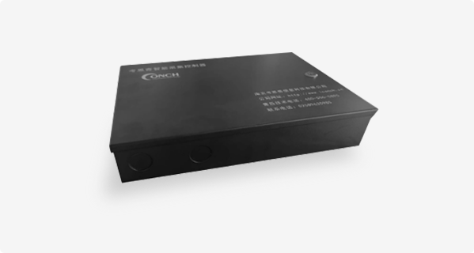

中间件产品

首页
产品中心
典型场景
关于我们

物联网网关
CMC_4000
物联网网关是核心设备，具备广泛的接入能力支持多种标准电气接口、通信网络，具备可管理能力，支持注册、远程管理等功能，具备协议和数据转换能力，支持标准协议的协议转换功能，具备可扩展能力，支持非标设备的接入和非标协议的适配和注册功能。

产品特点
接入控制能力
支持TCP/IP,UDP等标准通信协议，支持WiFi、蓝牙、ZigBee、Lora等多种无线通信机制，支持RS-232、RS-485、网口等标准设备联网通信接口，支持透传，直连等多种设备接入方式，支持ModBus、SNMP、韦根等多种标准设备通信协议，支持身份识别设备、传感采集设备、脉冲控制设备、网络设备、模拟量控制设备等多种设备的接入。
设备管理能力
具备联网管理能力，实现对网关的注册管理、权限管理、状态监管等管理功能，获取网关的标识、状态、属性等信息，实现远程唤醒、控制、诊断、升级和维护等功能。
协议转换能力
实现从不同的感知设备到物联网网关及管理平台的协议转换，将下层的标准格式的数据统一封装，保证不同的感知网络的协议能够变成统一的数据和信令，实现将上层下发的数据包解析成感知层协议可以识别的信令和控制指令。
离线处理能力
具备自动探测网络状况能力，支持配置数据和业务数据的存储，支持离线处理能力，在网络中断情况下能够自主执行数据采集和设备控制，在网络恢复后能够自动上报数据。
规格参数
| 主频 | 500MHz | |
| 内存 | 512MB DDR3 | |
| 存储器 | 4GB eMMC | |
| 以太网接口 | RJ45接口 | |
| 网口速率 | 10M/100M自适应 | |
| 串口波特率 | 视业务而定，可配置 | |
| 工作温度 | -40°C~+85°C | |
| 对接接线接口 | ||
| 功能 | 接口类型 | 说明 |
|---|---|---|
| 电源 | 5.08MM端子台 | DC12V输入 |
| 以太网接口*1 | RJ45 | 100M网络 |
| USB接口*2 | A型直插USB插头 | 1路拷贝数据 |
| 1路扩展3G/4G模块 | ||
| TF卡*1 | TF卡槽 | 烧录程序 |
| LCD*1 | FPC连接器（50PIN） | 16 位真彩色显示接口，扩展触摸屏 |
| RGB565接口 | ||
| 音频输出*1 | 3.5mm AUX接口 | 普通语音输出或文字转语音输出，通过跳线选择，可连接有源音箱或功放模块 |
| 音频输入*1 | 5.08MM端子台 | 外接麦克风 |
| RS485*2 | 5.08MM端子台 | RS485通信 |
| 开关量输入*4 | 5.08MM端子台 | 开入 |
| 继电器输出*4 | 5.08MM端子台 | 开出 |
| 韦根采集*4 | 5.08MM端子台 | 支持韦根26和韦根34 |
| Debug | 2.54MM排针 | 调试串口,支持 5V 和 3.3V 电平 |
| LED | 指示灯 | 电源和运行指示灯 |
| 天线 | SMA 接口天线座 | WiFi和蓝牙模块天线 |
| 产品功能 | ||
| 屏显 | ||
| 支持双屏异显，主屏幕与客屏显示不同内容，前置200万像素摄像头 | ||
| 硬件接口 | ||
| 2路RS485接口，和外部设备（485读头及传感器）交互、通信以及数据透传 | ||
| 4路韦根接口，支持韦根26协议和韦根34协议 | ||
| 2路USB接口，预留拷贝数据用和扩展3G/4G模块用 | ||
| 预留1路触摸屏接口（50pin的RGB565接口），对接触摸屏 | ||
| 具有音频输出功能，采用3.5mm AUX接口，支持普通语音输出和文字转语音输出 | ||
| 输入输出方式 | ||
| 4路继电器输出 | ||
| 4路开关量输入 | ||
| 设备能力 | ||
| 具有实时时钟功能 | ||
| 具有语音输入功能 | ||
| 支持板载有线、无线网络、蓝牙多种通信方式，而且可以通过USB扩展3G/4G功能 | ||
| 一个SD插槽，通过SD烧录程序 | ||
| 使用EPROM实现系统加密 | ||
| 支持运行指示灯指示功能 | ||
| 支持看门狗功能 | ||
| 支持嵌入式WEB系统、嵌入式数据库系统 | ||
视频展示